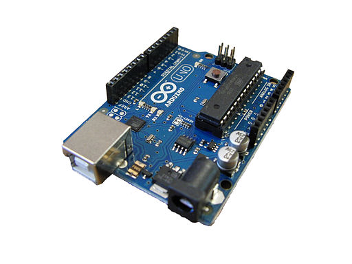
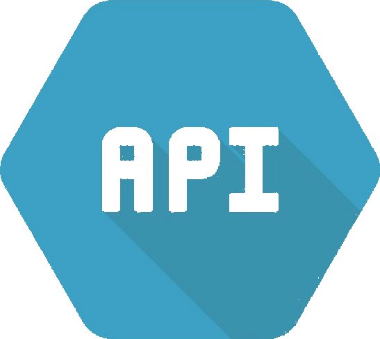

Diccionario
Sistema Solar
Definición
-
El sistema solar es el sistema planetario que liga gravitacionalmente a un conjunto de objetos astronómicos, entre los que se encuentra nuestro planeta Tierra, que giran directa o indirectamente en una órbita alrededor de una única estrella conocida con el nombre de Sol.
- Algunos datos más: El Sistema Solar está situado en uno de los tres brazos en espiral de esta galaxia, llamado Orión, a unos 25.800 años luz del núcleo, alrededor del cual gira a la velocidad de 250 km por segundo, empleando 225 millones de años en dar una vuelta completa. A este tiempo le llamamos año galáctico.
Para saber más: Puedes aprender más sobre el Sistema Solar a través del siguiente enlace.
Arduino

- Definición
-
Arduino es una plataforma de electrónica "open-source"o de código abierto cuyos principios son contar con software y hardware fáciles de usar. Es decir, una forma sencilla de realizar proyectos interactivos para cualquier persona.
- Para saber más
-
Si quieres saber más sobre Arduino visita su web o mira este documental en el que te explican su historia.
API's

- Definición
-
API es una abreviatura de Application Programming Interfaces (interfaz de programación de aplicaciones). Se trata de un conjunto de definiciones y protocolos que se utiliza para desarrollar e integrar el software de las aplicaciones, permitiendo la comunicación entre dos aplicaciones de software a través de un conjunto de reglas.
- Ejemplo
-
Mostrar en una pantalla datos relativos a la climatología o, como vamos a realizar en nuestro proyecto, a las características de diferentes exoplanetas.